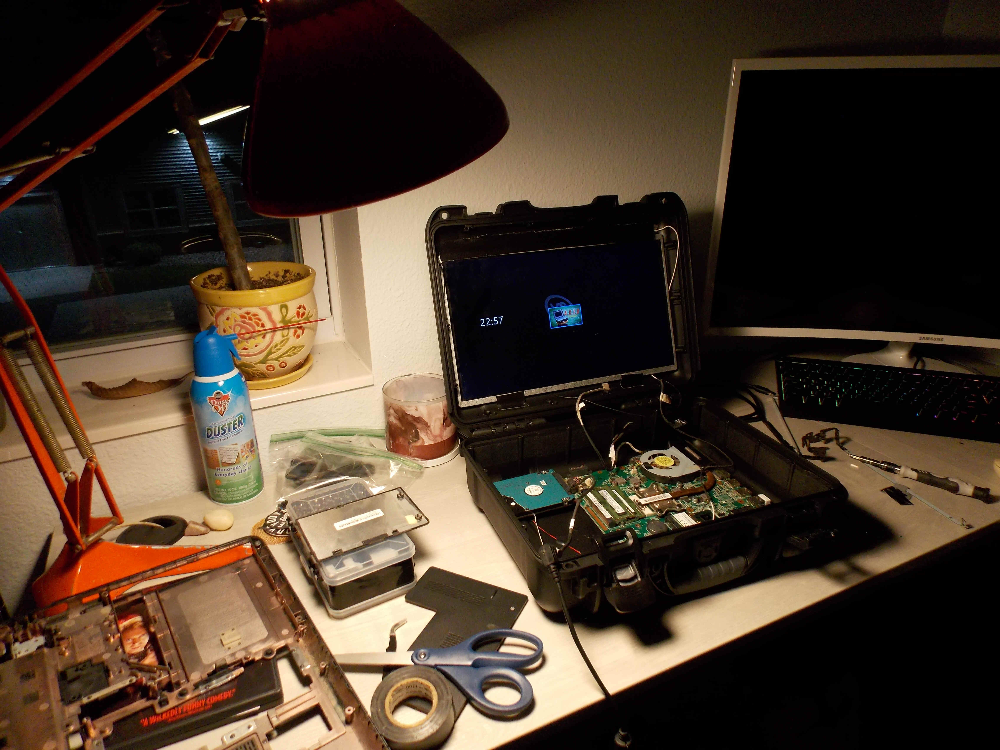

Redbox Machine |
The machine still works 95%. You can rent movies (for free now) and return them. The maintenance menus are also accessible fairly easily. The only thing that doesn't seem to work is anything tied to their home servers (that don't exist now) such as the rewards programs. Not a huge loss there. With some modifications, the Redbox Tinkering discord group has been able to bypass the card scanner altogether, change the rent limit from 3 to 5, add back the option to buy movies, bring back the games rental options, and more. I believe I was the first to discover permanent dark mode for the UI. Almost every Redbox machine was running a version of Windows 7 with almost no features except for the Redbox programming. There was one or two people that were able to find Redbox machines running a Windows 10 version, which was only in a handful of machines before they went bankrupt. One person was actually able to get the computer inside, and download the operating system to share it. My machine has both the Windows 7 and Windows 10 versions running on it, though I primarily use the Windows 7 version. It messes up the inventory when you rent from one and switch to the other. It was also discovered how to add in custom movies to the lineup, add custom barcodes, and be able to rent/buy them. I know some were trying to add their whole movie collections to the machine, and I plan to eventually, but I only got so far as to add a custom movie and make it rentable. It is a long process that I might write up how to do it if you have your own machine. |
Cyberdeck |
A cyberdeck is a portable computer designed to survive in a post-apocalyptic scenario. I don't expect to be in one, so I just wanted to make a dope laptop. I bought a tough carrying case from a literal traveling salesman in St. Paul. It's branded Motorola, has strong clips, and has an airtight seal that I believe is rated IP68. It could be fully submerged in water and survive.The inside is a Toshiba Satellite L745 from early 2010's. Not high powered at all, but it's what I had. I will likely upgrade in the future. Shown in the picture is the motherboard, original hard drive, and original screen gorilla-taped to the top part of the case, with the PC running Linux Mint. This project is not complete as of 3/7/25. I have a ways to go, which involves me learning 3D printing. The idea for this cyberdeck is to have a portable data recovery/PC repair workstation. It will have HDMI and VGA in to the display to test computers with no video output/laptops with broken screens. It will have a hard drive slot to test SATA hard drives to recover files in case the computer is a loss. It'll have compartments for necessary cables, and hopefully I can fit the full charging situation inside instead of needing to carry a separate adapter outside of it. My future plans for finishing it are to get an SSD for faster booting, and dual boot Linux Mint and Tiny10. Eventually upgrade with a more modern laptop, preferably a free one, or one heavily discounted for a broken screen possibly. A mini PC would also work (Latte Panda-type deal). I'll need to design and print the interior casing to separate the motherboard from the keyboard/mouse and make it safer to be around. I have an LCD display from an iPad 4 that I plan to use for the screen, so I'll need a display board to make it work. Leave slots for a USB hub, video inputs, etc. It'll be a while because it's a more involved/expensive project, but not too expensive. I have a problem with spending money on my projects, trying to do it as free/cheap as possible. I'll finish this one day I prawmise. |
Arcade Machine |
It has been working for a while, however I haven't put it all back together after moving it into our apartment, so currently it isn't functional. That's why the picture shows my other brother-in-law Justin playing the games on a monitor attached to it. Future plans to keep it working is to finally install the side door, which I need piano hinges to attach it. That should make accessing the internals much easier than unscrewing plywood. There seems to be an interference issue somewhere in the actual TV that makes it look wavy regardless of where it's plugged in, what's plugged into it, or what video it's showing. I may fix that, but I don't fully know what I'm doing there. |
Logo Design |
I have been designing logos for many years. Quite a few have been used by businesses, family members, and me on my manic make-a-business episodes. I have always liked digital artwork and design, and it's been nice to be able to create or recreate something if I like a certain idea. When it comes to logos, I do like some more modern styles that are somewhat simple, but I feel I like more complicated works more, ones with character. I'm not fully there, so a lot of my logos are simple. I'll have more examples posted on the Music/Art page. If you like any designs and are looking for digital art/logo design, hit me up. |
"FAHO" |
"FAHO" is my graffiti tag that I designed, which I have not vandalized anything with. If I did I wouldn't put my face on this site. I like the look of graffiti and wanted to try something out. I haven't gone too far but hopefully I can learn some more. My main goal with the art is to make hoodies/t-shirts/hats with it. I have one hoodie with this design that is fading real bad. One day I'll get it reprinted, or redesign it. More examples will be posted in the Music/Art page. If you need me to vandalize something of yours, let me know. |
 I got a Redbox
machine as they were going out of business. They were disposing of them from businesses
like Walmart, Walgreens, etc. and I happened to catch one right as it was going out. The
guy taking it offered me four Redbox machines, of which I took one and my friend took
another. His was blue, because it was at Walmart and they required blue ones at a certain
point. Mine was also from Walmart but must have been before that requirement.
I got a Redbox
machine as they were going out of business. They were disposing of them from businesses
like Walmart, Walgreens, etc. and I happened to catch one right as it was going out. The
guy taking it offered me four Redbox machines, of which I took one and my friend took
another. His was blue, because it was at Walmart and they required blue ones at a certain
point. Mine was also from Walmart but must have been before that requirement. My brother-in-law
Harrison (not pictured) and I built an arcade machine from scratch using a free 27"
CRT TV from Facebook, hardboard and 2x4's from Home Depot, buttons from China, and an old
tower PC running Batocera Linux. Because it runs off a PC, we can put any games we'd like
onto it, as long as our buttons and joysticks can use it. Obvious additions were actual
arcade games like Simpsons, Space Invaders, Tapper, Pac-Man, etc. as well as classics like
Super Mario Bros, Tetris, and Crazy Taxi.
My brother-in-law
Harrison (not pictured) and I built an arcade machine from scratch using a free 27"
CRT TV from Facebook, hardboard and 2x4's from Home Depot, buttons from China, and an old
tower PC running Batocera Linux. Because it runs off a PC, we can put any games we'd like
onto it, as long as our buttons and joysticks can use it. Obvious additions were actual
arcade games like Simpsons, Space Invaders, Tapper, Pac-Man, etc. as well as classics like
Super Mario Bros, Tetris, and Crazy Taxi.